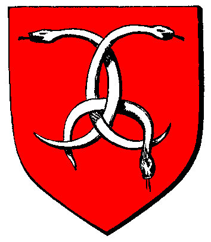

|

|
Das schwarze Brett
|
|
| Übersicht,
Vorschläge |
|
System/Engine/Technisches - Ke an Noobs (1  ) )
|
Kantar
 |
So ist es momentan:
Kaum kommt ein neuer Spieler auf die Scherbe wird er direkt mit Kriegserklärungen bombadiert, und ist direkt negativ beeindruckt
So soll es werden:
In der Schnupperzeit kann man Neulingen keine Kriegserklärung geben.
Vorteile für das Spiel:
Vieleicht bleiben dann ein paar mehr Leute und werden nicht direkt vergrault da sie sich eher ein Bild machen können,eventuell mehr Interaktion.
Nachteile für das Spiel:
Die direkt KE-verteiler jammern rum.Torwächter haben mehr Arbeit.
Mögliche Problematiken:
Sehe ich keine .
Sonstiges:
** |
13.06.13 7:49
 |
|
Altan Stormwind
 |
leidliches Thema, leider wurden einfach zu oft solche Accounts ausgenutzt um Schaden zu verursachen und die SL will an der Stadttorsituation nichts ändern...
aber ob es wirklich hilft, wenn die Neulinge nicht auf der Newbieinsel die KE bekommen, sondern erst 12 Stunden später, wenn sie runter sind, wage ich zu bezweifeln... |
13.06.13 8:44
|
|
Kantar
|
Ins Spiel Schnuppern können Neue Leute 3 Wochen, und es gibt ja Einschränkungen die es früher nicht gegeben hat..Ich glaube nicht das da noch jemand etwas schwer ausnutzen kann.Natürlich gibt es bestimmt immer welche die irgendwie irgendwas umgehn können. |
13.06.13 20:53
|
|
Altan Stormwind
|
naja es reicht ja, wenn ich einen Stadtplan bekomme und die Infos, was für Armeen stehen in den Kasernen, damit kann man schon eine ganze Menge anfangen... |
13.06.13 21:14
|
|
Tattergreis
 |
Aus meiner Erfahrung (ca 25 Neulinge bisher, die kamen, dann weiterzogen oder in Loh blieben) sind diese KE´s neuen Spieler|innen leicht zu erklären. Sie fragen und bekommen ein Täubchen. Das wird auch verstanden.
Einige berichteten auch, dass Ihnen eine Erklärung für die KE gleich mitgeliefert wurde. |
14.06.13 16:01
|
|
Turiandor Dragus
 |
Ich gebe mir Mühe :) |
15.06.13 8:48
|
|
| Chevonne (RIP) |
vielleicht wäre es ein ansatz, wenn man bei der KE den grund gleich mit der systemmeldung verbinden könnte.
also: "XY hat Dir den Krieg erklärt, weil..." |
22.06.13 10:30
|
|
| Chevonne (RIP) |
für turiandor und andere torwächter wären natürlich zutrittsverbotserklärungen gut. lassen niemanden durch, aber WDs lösen sie zum beispiel nicht aus. |
22.06.13 10:46
|
|
Baldur McMulenberc
 |
Wurde aber bereits hundertfach vorgeschlagen, und ebensooft durch die SL abgelehnt. |
22.06.13 12:56
|
|
Cadiramos S. Cobar
 |
wozu ein spiel, sinnvoll erweitern, wenn es bereits lahmt wie ein alter gaul? wahrscheinlich würde diese änderung das spiel noch langsamer machen... |
07.08.13 17:14
|
|
Torkon
 |
Vielleicht sollten die KE-Verteiler erst einmal den Neuling "beobachten", wie er/sie sich verhält.
Z.Bsp. Ist es ein friedlicher Spieler, der nur ein bissl Geld verdienen will mit ernten, jagen usw. oder ist es ein Spieler, der von Anfang an Gebäude plündert und so Schaden verursacht.
Man landet ja derzeit auf der Lagerinsel, in Lager Nord glaub, und da hat man auch meist nur wenig Geld bei sich und selten sind da Routen von weg. D.h. man muss erst mal seine Reisekasse aufbessern und in der Gegend rumlaufen, auf der Suche nach der nächsten Stadt. Da man ja da noch keine Wichtelkarte hat.
Sinnvoll fände ich es, wenn die Torwächter vor der KE mit der Begründung der KE, eine Hinweisnachricht schicken mit entsprechendem Inhalt.
Daraus ließe sich ja dann vielleicht auch RP machen oder auch Infos an die Spieler verteilen, dass sie sich besser in dem Spiel zurecht finden.
|
02.07.14 10:18
|
|
Übersicht,
Vorschläge
|
|
|
|